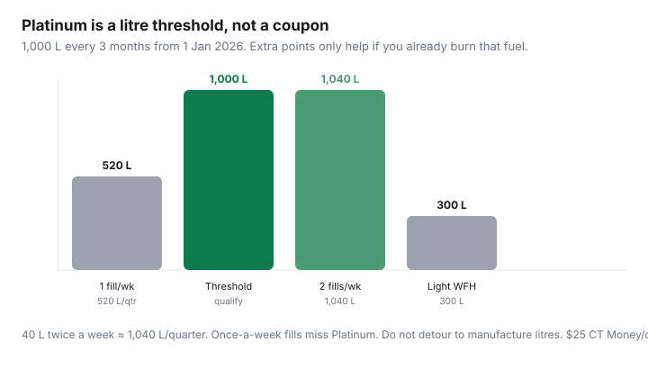

Transportation · Canada
Is Petro-Points Platinum worth it in 2026? Litre thresholds and CT Money math
Petro-Canada launched Platinum Status on 1 Jan 2026 as a frequent-fueller tier: buy 1,000 litres in three months (their example: about two fill-ups a week) and you get 50% more Petro-Points plus partner extras. Light hybrid drivers will never see it. Highway commuters and trades vans already live there. The mistake is treating Platinum like a coupon you chase by detouring, or ignoring it when you already burn 1,040 L/quarter on the way to work.
This is Petro-Points Platinum worth-it math for 2026 — litre thresholds, CT Money, and the RBC stack — not a U.S. fuel-club explainer. Compare the other two pumps in PC vs Petro-Points vs Scene+ and Esso PC Optimum.
Disclosure: RBC cards linked to Petro-Points and Canadian Tire Triangle / CT Money are offer types. Saving Optimizer may earn a commission if we later add partner links. We do not currently claim RBC, Suncor, or Canadian Tire partnerships. Compare applications on the issuer’s site. Never carry a balance for points.
Key takeaways
- Qualify with 1,000 L every quarter at Petro-Canada / participating Gas+. Status is not a paid membership. Miss the litres, lose the extras next quarter.
- Platinum earn: 15 pts/L on fuel instead of 10 (50% more), plus 15 pts/$ in-store vs 10. Base redemption remains 1,000 pts = $1 (about 1¢/L at 10 pts, 1.5¢/L at 15).
- Link Triangle: public copy still pays up to ¢/L in CT Money and $25 CT Money each quarter you qualify (up to $100/year). Link an eligible RBC card: Petro-Canada markets up to 7¢/L instant (confirm petro-canada.ca/rbc the week you fill).
- 40 L twice a week ≈ 1,040 L/quarter. Once a week ≈ 520 L — do not chase. Household pooling ended on community trackers (15 Mar 2026) — assume your own card unless live terms say otherwise.
- Marketing “up to $500/year” includes partner perks. Model 1.5¢/L + $25 CT Money + any real RBC ¢/L on litres you already buy. Shop the posted price first.
How Platinum status works (litres per quarter)
Petro-Canada’s consumer page (reviewed Sep 2026): fuel 1,000 litres every 3 months at 1,700+ sites and participating Gas+. There is no enrolment form beyond a Petro-Points account. When you cross 1,000 L in the quarter, Platinum extras apply for the rest of that qualifying window; you must hit 1,000 L again next quarter to keep them. That is a treadmill, not a lifetime elite card.

Worked litres (labelled): 50 L × 8 fills/month × 3 = 1,200 L — you qualify without trying if that is already the commute. 35 L × 4 fills/month × 3 = 420 L — you will not qualify unless you add a second household vehicle onto the same card (and live terms allow it). Do not drive extra kilometres to “get over the line.” Extra fuel is the opposite of a reward.
50% more points and quarterly CT Money value
Base Petro-Points: 10 pts/L, 1,000 pts = $1 at fuel, store, or wash. Platinum: 15 pts/L = 1.5¢/L if you actually redeem. On 1,000 L that is $15 in points versus $10 base — a $5/quarter bump ($20/year) before partners. Nice. Not a reason to pass a 6¢/L cheaper independent.
Triangle link (public frequent-fueller copy, 2026): $25 CT Money each quarter you are Platinum, cap $100/year, plus ongoing CT Money ¢/L on fuel when the link is live (often described as up to 3¢/L — confirm the Triangle/Petro FAQ when you fill). $25 × 4 = $100 only if you qualify all four quarters. Miss one winter of WFH and you keep $75.
| Layer | On 4,000 L | Notes |
|---|---|---|
| Base 10 pts/L | $40 | 1,000 pts = $1 |
| Platinum extra 5 pts/L | $20 | Only in qualifying quarters |
| Triangle $25 × 4 | $100 | Must stay Platinum and linked |
| RBC “up to 7¢/L” | up to $280 | If the live offer is 7¢ and you pay with that card |
The RBC line dominates — and it is available to linked cards even without Platinum. Platinum is the points bump + $25 CT Money. Do not open an RBC card you will carry at 20% interest to chase 7¢/L.
RBC card link for instant ¢/L savings
Petro-Canada’s RBC page still markets up to 7¢ per litre when an eligible RBC credit or debit is linked to Petro-Points (reviewed with the main Petro-Points page, Sep 2026). Some partner articles describe 3¢/L + 20% more Avion + 20% more Petro-Points. Those can both be “true” as offers change. Before you model $280/year:
- Open petro-canada.ca/rbc and read the current ¢/L, eligible SKUs, and whether premium fuel differs.
- Link the card in the Petro-Points account. Pay with that card at the pump — a different Visa earns base points only.
- Treat instant ¢/L as cash off the board. Compare to a 7¢ cheaper independent down the street.
If you already hold RBC for banking, linking is free yield. If you do not, price the card as a card (fee, rewards elsewhere, interest risk), not as a gas religion.
Who hits 1,000 L/quarter naturally vs who should not chase it
- Natural yes: 25+ km each-way five-day drive, trades / real estate / rural highways, two-vehicle household already loyal to Petro-Canada, pickup that drinks 70 L every 8 days.
- Natural no: hybrid 2-day office, short urban commute, one 40 L fill a week, people who already shop Costco gas or Esso-on-the-way-home.
- Do not chase: driving 15 minutes out of the way, filling a half-empty tank twice, or buying fuel for someone else’s car to “help the quarter.” Extra kilometres are litres you paid full price for.
StatsCan gasoline can move 20% year over year (see cut gas without a hybrid). Platinum does not hedge the commodity. It only thickens the loyalty layer on litres you were buying anyway.
Converting Petro-Points to CT Money—when it helps
After Petro-Points and Triangle are linked, points can convert to CT Money (public cap often cited as 1,000,000 points / $1,000 CT Money per calendar year — confirm the live conversion tool). Convert if you already shop Canadian Tire, Mark’s, or Sport Chek and would spend that cash there. Do not convert a balance you were about to burn as ¢/L at the pump this week if that ¢/L is why you stopped. Conversion is a till choice, not a raise.
Compare with Scene+/PC Optimum for your commute volume
If Petro-Canada is not on the way home, Platinum is theoretical.
- Loblaw household + Esso/Mobil: PC Optimum 10 pts/L (1¢) and more with a PC Mastercard. No 1,000 L treadmill. See the Esso guide.
- Sobeys / Scotia household + Shell: Scene+ 1 pt/L plus instant 3¢/L on linked cards after the 26 May 2026 nationwide Scene+ launch. Volume tier is Go+, not 1,000 L.
- Posted price: a 8¢/L cheaper independent still beats 1.5¢ Platinum points on 40 L ($3.20 vs $0.60).
App offers to load before each fill
Platinum does not replace the weekly bonus tile. Open the Petro-Canada app, load the offer, then pump. In-store 15 pts/$ only helps if you were buying the washer fluid anyway. Premium fuel bonus tiles are how people spend $6 extra to earn $0.40. Skip them unless the car requires the grade.
Decision: log litres for one quarter. If you are under 800 L without trying, delete Platinum from your personality. If you crossed 1,000 L on the commute, link Triangle (and RBC if you already have it), redeem points, and still shop the board.
Sources & date stamps
- Petro-Canada, Discover Petro-Points / Platinum Status (petro-canada.ca), reviewed Sep 2026 — 1,000 L / 3 months from 1 Jan 2026; 10 pts/L base; up to 7¢/L RBC; $25 CT Money/quarter language.
- Partner explainers (creditcardGenius, Driving.ca sponsored 2026) — 15 pts/L, $25 CT Money, “up to $500” marketing ceiling. Treat marketing as a ceiling.
- On-site three-brand pump guide (16 Sep 2026 review) for PC / Scene+ comparison rates.
Frequently asked questions
How do you get Petro-Points Platinum in Canada?
There is no separate fee. Fuel 1,000 litres in a three-month period at Petro-Canada or participating Gas+ on a Petro-Points account. You must hit 1,000 L again next quarter to keep the extras.
Is Platinum worth it if I fill once a week?
Usually no. 40 L once a week is about 520 L/quarter. You will not stay Platinum. Follow the cheapest posted litre and whatever stack is on your commute (PC, Scene+, or base Petro-Points).
How much extra is 50% more Petro-Points?
15 points per litre instead of 10. At 1,000 points = $1 that is 1.5¢/L versus 1¢/L. On 1,000 L the extra points are about $5 for the quarter — before Triangle’s $25 CT Money and any RBC ¢/L.
Do I need an RBC card for Platinum?
No. RBC is a separate link that can add instant ¢/L (Petro-Canada has marketed up to 7¢/L). Platinum is the litre tier. Confirm petro-canada.ca/rbc before you apply for a card you do not already want.
Does household fuel pooling count toward 1,000 L?
Assume no unless Petro-Canada’s live terms say your household cards combine. Community trackers treated pooling as ended 15 Mar 2026. Use one account for the vehicle you actually fuel.